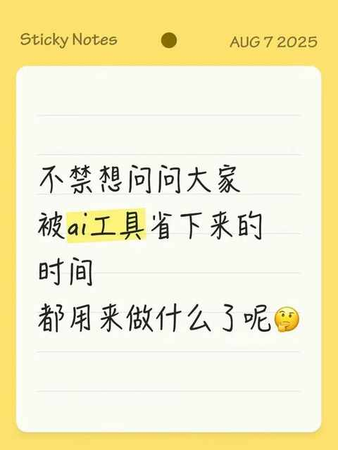
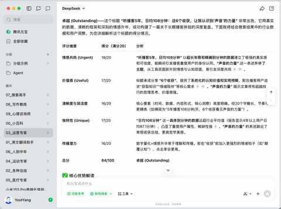
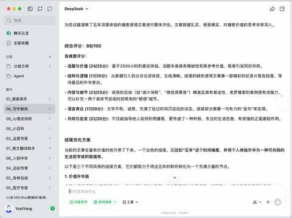
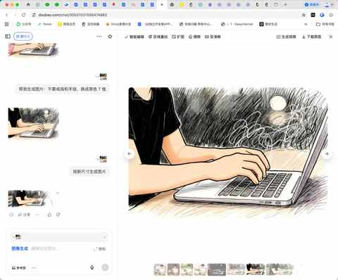
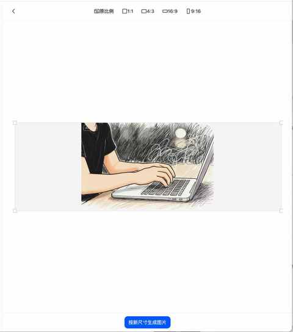

不禁想问问大家，被Ai工具省下来的时间，都用来做什么了呢？
一、引子
毫无疑问，当下的 Ai 工具是有用的，正确的使用，肯定能提高效率，不管是在工作还是生活中。
过年期间 DeepSeek 出圈之后，知道 Ai 工具的人也越来越多，那么被 ai 工具省下来的时间，都用来做什么了呢？
在 8 月初的时候，发了一个朋友圈，询问这个问题。

得到了一些回复，除了一位朋友回答说是玩手机之外，其他朋友均表示省下来的时候几乎都投入到工作和研究 Ai 啦！
二、我常用的两个 Ai 工具
日常我主要用两个 Ai 工具：腾讯元宝和豆包，和元宝聊天，用豆包生图。
其他很炸裂的 Ai 工具用的很少，主打一个轻度使用。
1️⃣ 腾讯元宝
置顶了 10 个配置好的角色，帮我去做特定的事情，例如 “03_运营专家”，主要用来优化我给到的标题。

在写文章的过程中，发现写结尾是弱项，便配置了一个“写作教练”的角色，让这个角色给予文章的修改建议和结尾的思路。

2️⃣ 豆包
并不是豆包聊天的功能不好用，而是已经习惯了腾讯元宝。
推荐大家都试试豆包的生图功能，综合上手难度、生图速度、可编辑性来说，豆包的生图功能是比其他几家更适合我这样的小白用户。
以下面这张图为示例：需求是生成一张公众号文章的封面图。
因为已经有了一个确定的参考照片，本次生成流程分为三步：
第一步：给豆包发送参考图，给到确定的风格指引
第二步：让豆包根据需求去调整已经生成的图

第三步：给到明确的图片尺寸指引，生成新图

下面是最终的成品图：
三、结语
如果让我也回答一下开头的问题，基于使用 Ai 工具的体验，我会这样回答：
Ai 工具能帮我省下一些时间，但不多，有时候用来刷手机，有时候用来运动，有时候用来看书。
在当下的阶段，要让 Ai 工具释放我们很多时间，也不是不可能，恐怕前期得花海量的时间去研究各种 Ai 工具的组合搭配才有这个可能。
毕竟效率的提升，必须是建立在对需求及工具十分了解的基础上，在这种情况下，判断才是准确度更高的。
你把 Ai 工具省下来的时间都用在了哪里？是陷入更忙的循环，还是找到了生活的新方向？
近期文章
90 年，35 岁，E区出发，即将在福州解锁首全马
嘿！还记得“为QQ等级挂机”的岁月吗？来晒晒你的等级吧！
11 个月，开极氪7X跑两万公里，用车总结及好物分享
一个长居省外中年人的合肥印象：记2025的年第4次合肥行
中年减肥成功2年后，才发现运动形式真不重要，守住这3点才能不反弹！
我的两个配图利器：两个APP强强联合，实现1+1 > 2的视觉升级
中年初跑者增加跑量两个月后，对如何选跑鞋有了 3个新思考
别慌！和所有Intel版Mac用户共享：3个让我们继续用的理由和2个续命秘籍
中年减肥成功2年后，才发现这5个坑当初要是有人点醒我该多好！
中年减肥成功2年后，才发现维持体重靠的不是毅力，而是这5个微习惯